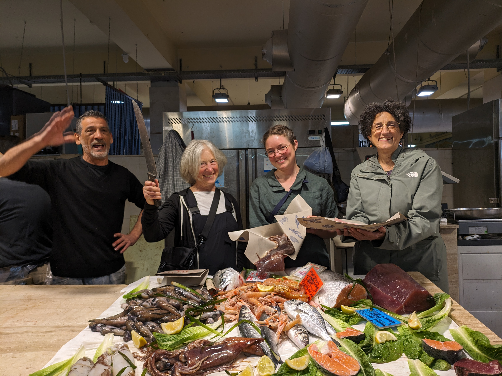
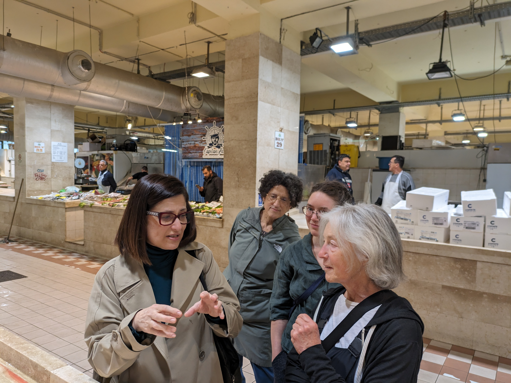
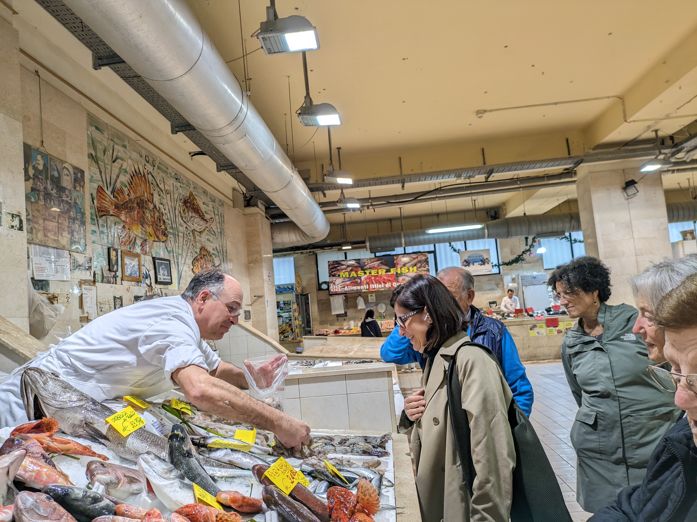
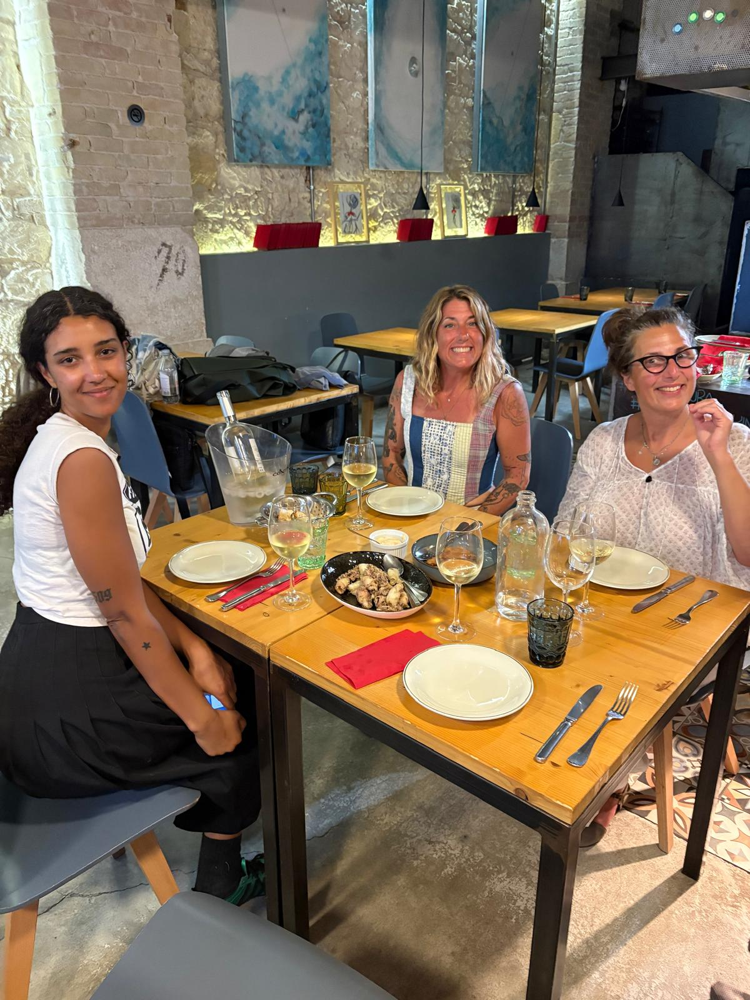
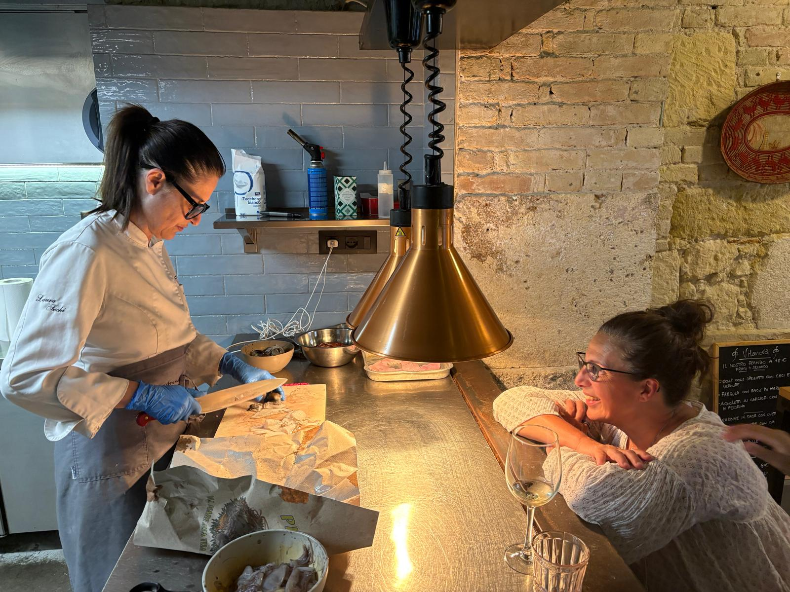

From Cagliari's ancient civic market at dawn to a private 4–5 course dinner cooked in front of you. The most intimate way to understand what Sardinian cooking really is.
We meet at Il Piemontese — one of Cagliari's most famous bars and pasticcerie — for coffee and pastries. Then Laura takes us to the Civic Market. She knows every vendor. She touches the fish, smells the herbs, holds the tomatoes. You begin to understand her cooking before she has touched a pan.


We meet at Il Piemontese, one of Cagliari's most storied bars and pasticcerie. Coffee, pastry, introductions. From there, Laura takes us to the Civic Market. She selects everything for dinner herself — fresh fish off the morning boats, vegetables, cheese, bread. You begin to understand her cooking before she has touched a pan.
Laura closes her restaurant to the public. It belongs to you. She cooks a 4–5 course dinner in front of the group — explaining every step, every decision, every instinct. You are not watching a demonstration. You are watching a superstar at work. Then you sit down and eat everything she made, with wine to match. The recipes are yours to take home.
Laura started cooking at eight years old, at the side of her grandmother and aunt in Oristano — a family of Spanish descent whose cooking was rooted in the oldest traditions of the island. What she learned there never left her.
Her cooking, and especially her way with fresh fish, rivals any chef in Sardinia. Not through complexity, but through the opposite: an almost instinctive understanding of which flavours belong together, and the discipline to stop there. The result is food of extraordinary simplicity and depth.
Watching Laura cook is like watching a superstar athlete perform. It is a memory you will never forget — and the recipes you will be able to replicate at home.
She is from Oristano. She has cooked at Vita Nuova in Via Sassari, Cagliari for years. Her cooking encompasses everything that is Sardinian — the freshest ingredients, cooked with elegance and simplicity, creating some of the most sublime tastes you will ever experience.
Vita Nuova · Via Sassari, Cagliari · Sardinia


The restaurant is yours. Laura has cooked everything in front of you. Now it arrives at the table — course by course, with wine chosen to match. The same dishes. The same ingredients you chose that morning at the market.
This is not a restaurant dinner. It is something you will talk about for years.
Pricing varies by group size and menu. Contact us and we will put together a proposal for your dates.
Tell us when you are coming to Sardinia and how many people are in your group. We will check Laura's availability and come back to you with a proposal. Most dates are arranged weeks in advance.
Write to Jon →jon@triguitalia.com